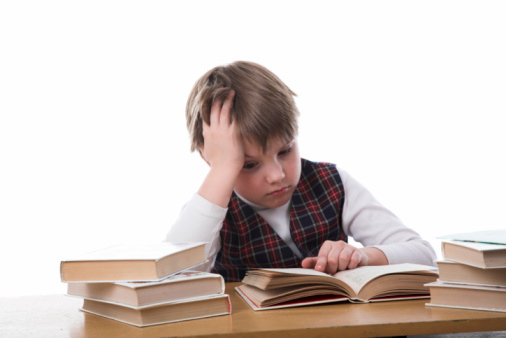
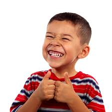
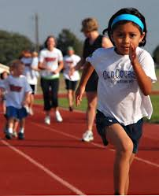

Children need coffee! The youth of today are falling asleep more in class than ever, by 1000%.Studies have shown that coffee gives you so much more energy. Why not help the kids out and give them coffee now? Donate today and change a kid's life forever. They aren't going to be able to survive without it eventually so why not jumpstart their energy today?
Better Focus

Kids these days can never focus. These future leaders of the world are getting smaller and smaller spans of attention. This makes the future bleak. But never fear, coffee is here! Thousands of studies have proven that caffeine increases attention by 3000%. Imagine the possibilities if kids were paying better attention in school.
More Productive

Everybody knows that caffeine gives you more energy with very little side effects. Since kids will be drinking this stuff soon enough anyways, why not make them more productive members of society now instead of tomorrow?
Fights Childhood Obesity

The children of America are getting fatter and fatter everyday. Coffee can help with that! Since there is only 1 calorie in 1 serving of coffee, kids who drink coffee will stop overeating and start to shed those pesky extra pounds!